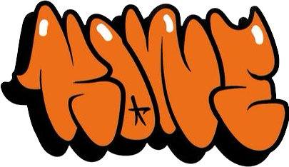
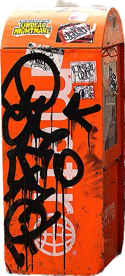

First Graffiti
The history of graffiti is wide and interesting. Here we will tell the story of the emergence of graffiti and tell the most interesting personalities. Starting from infestation on the streets of the ghetto, and use in politics, and ending with his eating in art.
Introductory information
Graffity in a certain sense can be called art or a way of expressing thoughts and ideas. Graffiti has come a long way from street gangs to declarations of love and open expression of political thought. There are popular people in the world of this street art, for me personally it is Dmitry Vrubel, Banksy, Jorit and others. We will talk about some of them a little later.
Origin 1920-1950s
But initially, the art of graffiti began to emerge on the streets of America in the ghetto, where there were skirmishes between street gangs. And in order to define and mark the territory, graffiti began to be used, these graffiti were often just the names of gangs and had the color of the gang. After that, young people began to take these grains for themselves and used them to indicate dissatisfaction with politics and local government.
Transformation: 1960s-1970s
In these years, the culture of graffiti continued to carry all the political meaning, but continued to develop. Forms and new types of graffiti began to appear, one of these types of graffiti is street art on food. He began to be infected on the east coast of the United States. It was then that the first enthusiasts began to leave inscriptions with names in random places around the city. Artists Cool Earl and Topcat126 were among the first writers, while Philadelphia street performer Cornbread is considered the unofficial founder of the movement in culture - he was one of the first to leave notes signed with his name without political overtones. And instead of a monotonous text, he began to introduce new forms to the pictures.
Mentions in the media
The first mention of graffiti in the media was the mention of the street artist Taki 183, he worked as a delivery man and moving to setrot at the stations, he left his pseudonym, after a while his name was almost at all stations and in a very large number. This was noticed by journalists from the New York Times and wrote a short article.
In fact, Taki 183 became the pioneer of such a direction of graffiti as tags. Tags are leaving your pseudonym on the territory of street space. And special respect was given to those artists who left their tags in especially dangerous places such as skyscrapers, metro, etc.
Subway
The metro plays a huge role in the world of graffiti, many popular artists began their work in the theory of metro stations and trains. At a time when the Internet and social networks were not yet widespread, the subway was the best way to communicate were subway cars, about 40 trains pass in the New York subway per hour, it was in the subway cars that many artists left their tags and drawings. In those days, the subway was not sufficiently guarded and was washed no more than once a month. In order to apply tags and drawings to the cars as quickly as possible, the artists specifically chose short pseudonyms - Tee, Iz, Pi, In, Le, To, Oi, so drawing tags took much less time. However, there were also so-called stylewriters, for whom style came to the fore. These two types of artists tacitly competed with each other, painting in the depot and on the subway cars.
Style Development
Futura 2000 became one of the first artists actively practicing the style in the subway. From the very first works, he saw the potential in drawing on subway cars - it was there that passers-by saw his first tags and drawings.
And while the new culture attracted more and more participants, recognizable faces had to think about how to stand out among the increasing number of tags. The most inventive artists began to incorporate graphic details in the form of strokes, circles, stars and other similar elements into the signatures, try artistic styles or play with the thickness, style and color of the inscriptions. New practices were quickly picked up by beginners - this is how the evolution of styles began.
And after that, street artists gradually began to move away from tags and move on to more complex technical structures, using protruding elements and creating volume in the text with gloss. Philadelphia-based artist Topcat126 came up with the Broadway style, which was soon replaced by the Block Busters style, which featured oversized slanted lettering. And another enthusiast under the pseudonym PHASE2 began to use volumetric fonts in the form of bubbles called Bubble Letters.
These styles became the main ones from which other practices of street artists developed. Block Busters and Bubble Letters pushed the artists to get creative, and the variety of techniques resulted in one mixed style called Wild Style. The period from 1975 to 1980 is considered one of the most favorable for the development of graffiti: with the heyday of the confrontation between the styles of artists, everyone tried to become more noticeable than the others.
1980-XXI:Europe and modernity
It wasn't until the early 1980s that street artists encountered their first real problems. When the city authorities began a mass struggle with drawings, many works began to be mercilessly destroyed - the life of fresh works was noticeably reduced, and the number of security guards in the subway and policemen on the streets increased markedly. To combat writers, city officials even introduced a series of laws prohibiting the sale of paint to minors, and paint cans, like weapons, were stored in safes or secure lockers.
Due to the difficulties that arose, the community of artists also thinned out: many did not like the threat of criminal liability, so some of the artists stopped painting on the streets and in the subway, and some took up legal work, working in studios.
For the remaining artists, the rules of the game have become noticeably tougher. When the circle of locations available for drawing decreased, their confrontation in places began to resemble the enmity of street gangs. Single artists did not dare to make creative forays without weapons, because otherwise they could be beaten, and close-knit teams even went to paint in groups for security purposes. Among the old-timers who took part in the confrontation, Skeme, Dez, Trap, Delta, Sharp, Seen, Shy 147, Boe, West, Kaze, Spade 127, Sak, Vulcan, Shame, Bio, Min, Duro, Kel, T Kid continued to work , Mack, Nicer, Brim, Bg 183, Kenn, Cem, Flight, Airborn, Rize, Jon 156, Kyle 156 and X Men.
In addition, with the beginning of the "war" for the cleanliness of the subway, the artists turned their attention to other mobile objects - cars. Basically, the writers preferred to draw on vans or small trucks of the city's delivery service - these cars cruised around the city every day, and the writers had another opportunity to advertise themselves and their work. Therefore, after the conditions for drawing in the metro became more complicated, the practice of drawing on public transport began to gain popularity.
Europe and galleries
After the tightening of the law in the United States, many artists left for studios, and many began to open new horizons and move to Europe, where they also continued their street art activities. This period is remembered by many figures as a time in which people were severely restricted and locked in galleries, this particular period is considered one of the most empty for art objects.
But it was precisely this time that gave us a large number of new names in art such as Haring, Jean-Michel Basquiat, Andy Warhol and the SAMO (Same Old Shit) movement.
One of the pioneers of the movement in France was the artist under the pseudonym Blek le Rat. To create drawings, he used special stencils, which allowed him to quickly draw graffiti and avoid arrests. With his work, the artist intended to show that art can be accessible to everyone and is not limited to the walls of galleries.
In the UK, street art is associated primarily with the name of Banksy - he began to paint in the nineties and is still considered the most visible and most secretive figure in street culture. While the artist's true identity is kept under wraps, his work has been exhibited in galleries around the world, with drawings popping up unexpectedly in cities all over the world. In addition, Banksy is active in politics, which is clearly reflected in his provocative work on the subject of police brutality, racial and gender discrimination, military conflicts and many other contemporary issues.